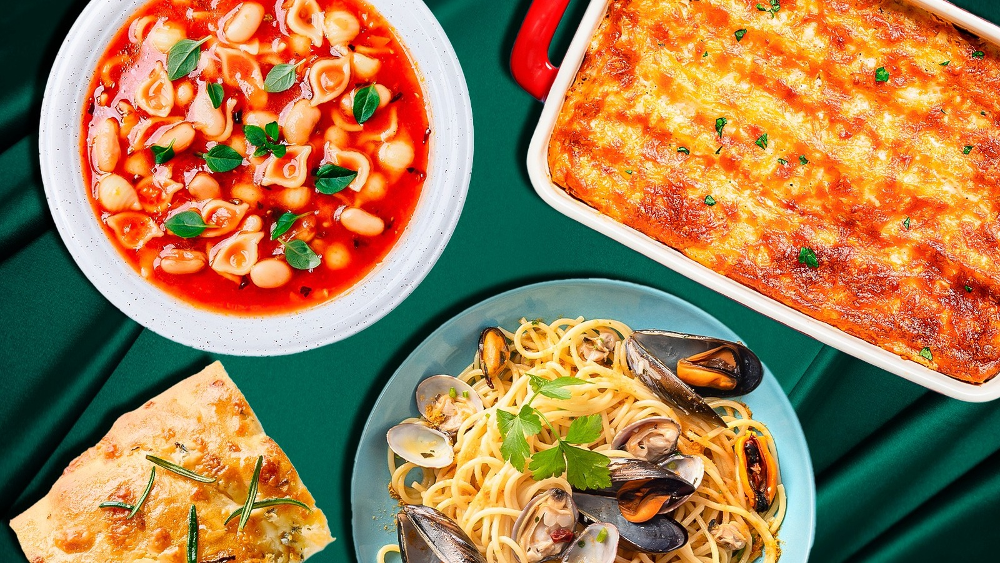
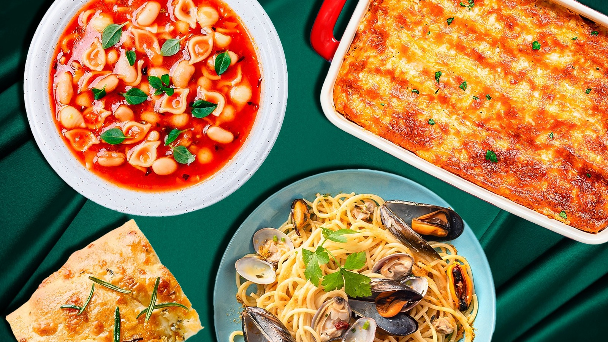
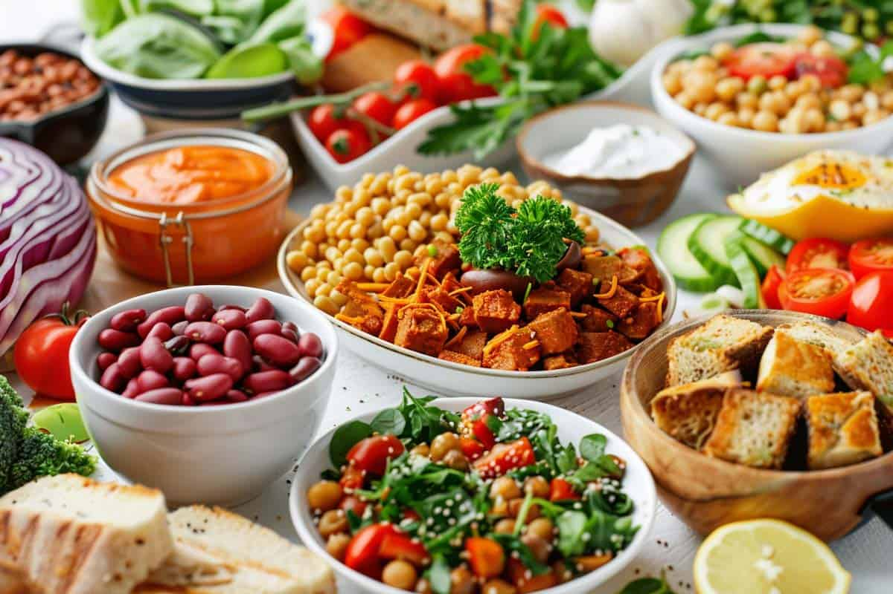
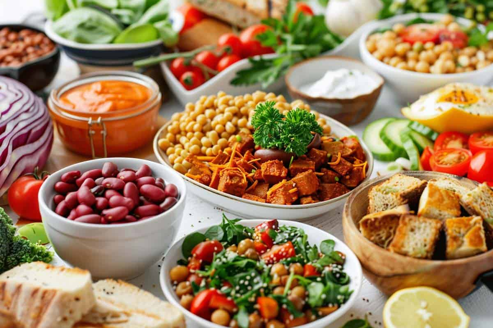

 

Italian Cuisine
Known for pasta, pizza, and gelato, Italian cuisine has spread widely across continents, becoming a staple in Western and non-Western countries alike.
Chinese Cuisine
With dishes like dumplings, Peking duck, and stir-fried noodles, Chinese cuisine has a massive global footprint and diverse regional variations like Cantonese and Sichuan.